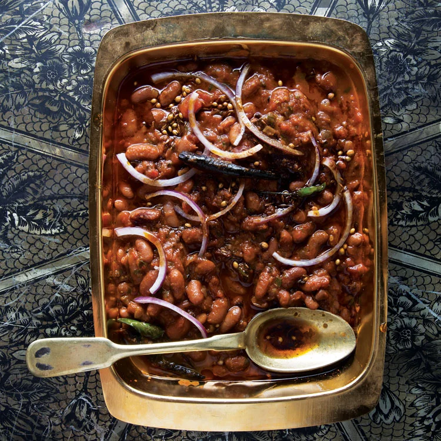

Rajma

Description
This Rajma recipe is a lightly spiced, creamy and delicious Punjabi curry made with kidney beans, onions, tomatoes
and spices. My Mom’s recipe for restaurant-style Punjabi Rajma Masala is a staple in our home, and after you try i
t I’ll bet it becomes one at yours, too. I also share a homestyle one pot rajma masala (which many of our readers
had requested) that will remind you about the comforting and satisfying rajma curry (or rajma chawal) made in
Punjabi homes.
Ingredients
- 1 cup red kidney beans
- 2 large onion
- 1 teaspoon ginger
- 1 tablespoon coriander powder
- 1/2 tablespoon powdered black pepper
- 1 cinnamon stick
- 2 green cardamom
- 2 clove
- 2 tablespoon mustard oil
- 2 large tomato
- 1 cup rice
- 1 tablespoon garlic
- 2 chopped green chilli
- 1 tablespoon cumin powder
- salt as required
- 1 tablespoon garam masala powder
- 1 black cardamom
- 1 tablespoon black pepper
- 1 tablespoon ghee
Cooking Steps
- Soak Rajma overnight
- Chop onions and tomatos and make ginger garlic past
- Steam cook rice